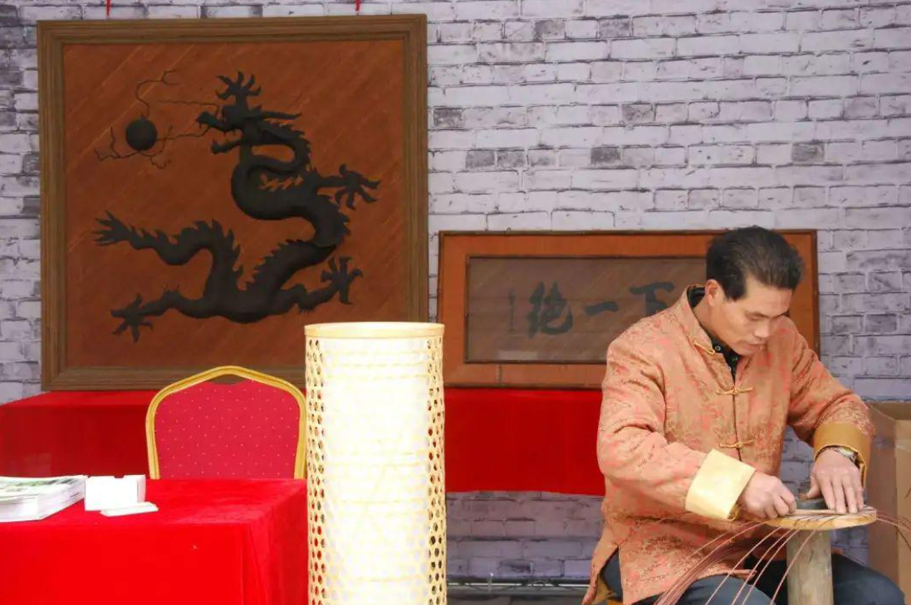
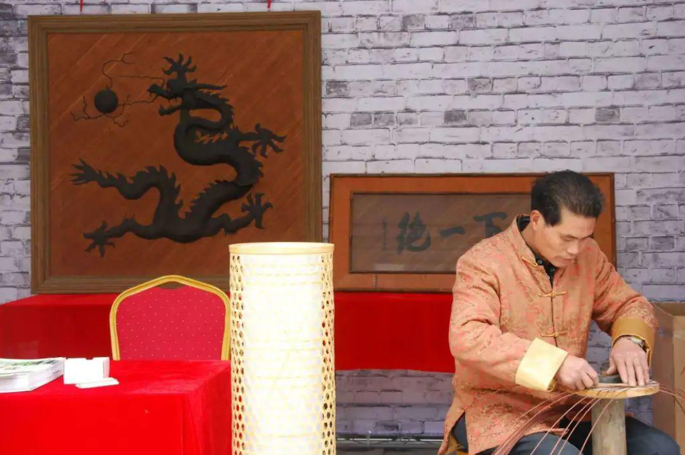
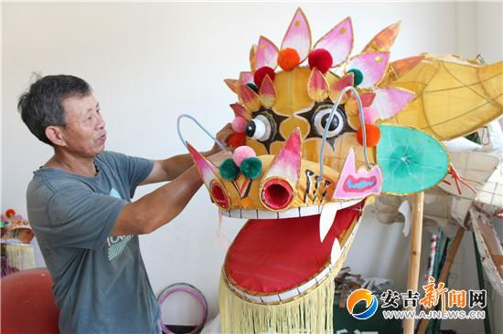
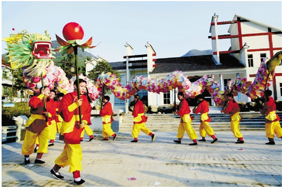
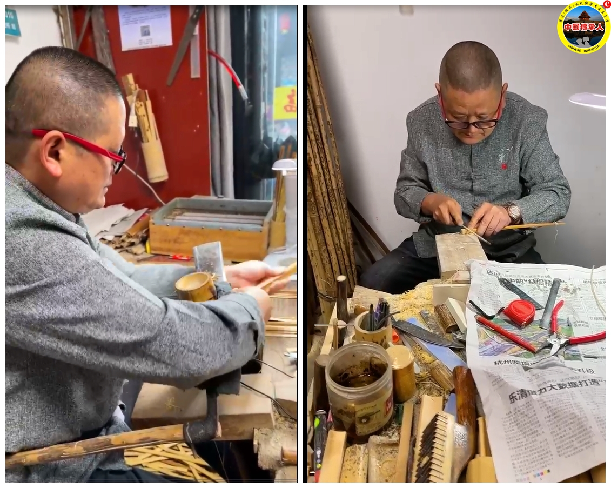
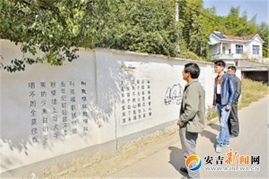

安吉竹编
安吉竹编是安吉县的传统手工艺，已有数百年历史。安吉作为“中国竹乡”，竹资源丰富，竹编技艺也因此得以传承和发展。竹编制品种类繁多，包括生活用品、装饰品和艺术品，如竹篮、竹箱、竹席、竹扇等。安吉竹编以其细腻的编织工艺和实用性著称，已被列入中国非物质文化遗产名录。近年来，安吉竹编还融入了现代设计元素，成为时尚与传统文化结合的典范。
安吉竹编是安吉县的传统手工艺，已有数百年历史。安吉作为“中国竹乡”，竹资源丰富，竹编技艺也因此得以传承和发展。竹编制品种类繁多，包括生活用品、装饰品和艺术品，如竹篮、竹箱、竹席、竹扇等。安吉竹编以其细腻的编织工艺和实用性著称，已被列入中国非物质文化遗产名录。近年来，安吉竹编还融入了现代设计元素，成为时尚与传统文化结合的典范。
安吉白茶是中国绿茶的代表之一，其制作技艺历史悠久，包括采摘、摊放、杀青理条、初烘、摊凉、复烘、收灰干燥等七道工序。安吉白茶以其“白叶绿脉”的独特外观和鲜爽甘甜的口感而闻名。2022年，安吉白茶制作技艺作为“中国传统制茶技艺及其相关习俗”的一部分，被列入联合国教科文组织人类非物质文化遗产代表作名录。安吉白茶不仅是当地的重要经济产业，也是安吉文化的象征。
化龙灯是安吉县梅溪镇上舍村的传统民间灯舞艺术，已有200多年历史。其独特之处在于“进门是花灯，出门是龙灯”，表演时花灯可连接成一条龙，寓意吉祥如意、风调雨顺。化龙灯的表演形式多样，包括舞龙、舞灯和音乐伴奏，具有浓厚的民俗文化特色。2014年，化龙灯被列入国家级非物质文化遗产名录，成为安吉民俗文化的重要代表。
 鄣吴竹扇是安吉县鄣吴镇的传统手工艺，以其精美的制作工艺和文化内涵著称。竹扇制作包括选竹、劈篾、编织、雕刻、绘画等多道工序，每一把竹扇都是工匠心血的结晶。鄣吴竹扇不仅实用，还具有很高的艺术价值，常作为礼品或收藏品。2023年，鄣吴竹扇制作技艺入选第六批浙江省级非遗代表性项目名录，成为当地文化产业的重要组成部分。
安吉民歌是安吉县的传统音乐艺术，以其朴实、自然、富有乡土气息的特点而闻名。歌词多表达对生活、爱情和家乡的情感，旋律优美，节奏明快。安吉民歌的演唱形式多样，包括独唱、对唱和合唱，常在节日庆典和民俗活动中表演。安吉民歌已被列入中国非物质文化遗产名录，是安吉人民精神文化生活的重要组成部分。
